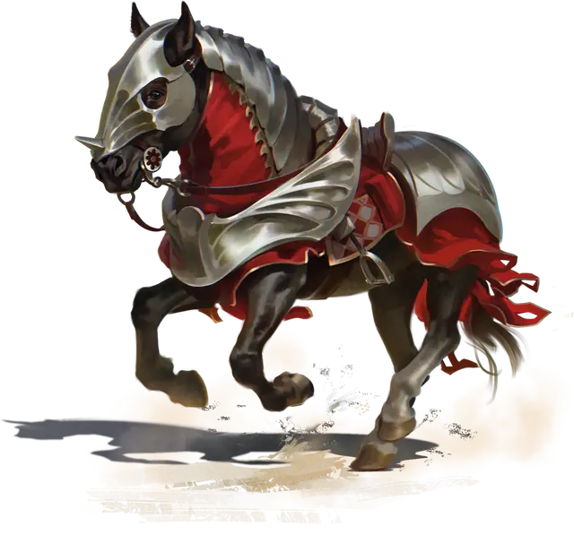

Боевой конь
Warhorse
Большой Зверь, без мировоззрения

Класс Доспеха 11
Хиты 19 (3к10 + 3)
Скорость 60 футов
| мод | спас | ||
|---|---|---|---|
| СИЛ | 18 | +4 | +4 |
| ЛОВ | 12 | +1 | +1 |
| ТЕЛ | 13 | +1 | +1 |
| мод | спас | ||
|---|---|---|---|
| ИНТ | 2 | −4 | −4 |
| МДР | 12 | +1 | +1 |
| ХАР | 7 | −2 | −2 |
Чувства пассивное Восприятие 11
Опасность 1/2 (100 опыта)
Бонус мастерства +2
Среда обитания Город
Особенности
Растаптывающий рывок. Если конь переместится как минимум на 20 футов по прямой к существу, а затем в том же ходу попадет по нему атакой копытами, эта цель должна преуспеть в спасброске Силы Сл 14, иначе будет сбита с ног. Если цель сбита с ног, конь может бонусным действием совершить по ней ещё одну атаку копытами.
Доспехи боевого коня. У боевого коня в доспехах КД зависит от того, какие именно доспехи на него надеты (подробности о доспехах скакунов смотрите в Книге игрока). В КД коня уже включен модификатор Ловкости, если он применим. Доспехи не меняют показатель опасности коня.
| КД | Доспех |
| 12 | Кожаный |
| 13 | Проклепанная кожа |
| 14 | Колечный |
| 15 | Чешуйчатый |
| 16 | Кольчужный |
| 17 | Наборный |
| 18 | Латный |
Действия
Копыта. Рукопашная атака оружием: +6 к попаданию, досягаемость 5 футов, одна цель. Попадание: Дробящий урон 11 (2к6 + 4).